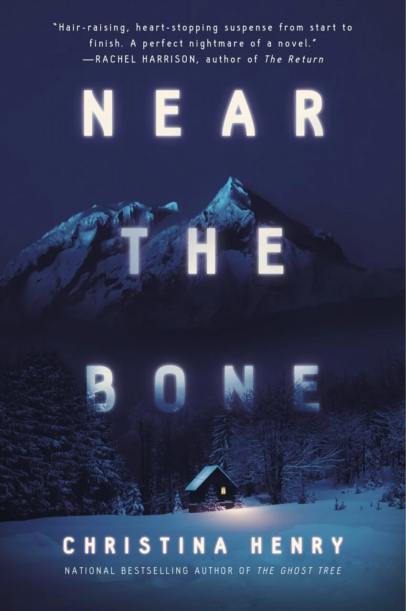

Near the bone
Autrice : Christina Henry
Genre: Horreur
Année de publication: 2021
Langue: Anglais

Sommaire
Mattie vit avec son mari William dans une cabane perdue dans les montagnes. Il ne la laisse pas fréquenter personne, ne voit pas le monde extérieur et passe ses journées à faire les tâches que William veut qu’elle fasse, car il est un fanatique religieux violent et autoritaire et il exige une obéissance absolue.
Un jour qu’elle vérifie les pièges dans la forêt, elle découvre le cadavre mutilé d’un renard, avec à côté des empreintes de pied gigantesques. Elle le dit à William, qui décide de traquer la créature, persuadé que c’est une épreuve envoyée par dieu. Sur son chemin se trouve 3 passionnés de cryptozoologie qui sont venus enquêter eux aussi, mais William ne voulant pas partager quoi que ce soit, leur dit de décamper.
La découverte d’une grotte contenant des ossements d’animaux triés par organe laisse croire que ce n’est pas un prédateur ordinaire.
Critique
Un coup de cœur, j’ai eu beaucoup de difficulté à arrêter de lire. L’ambiance est glaçante, oppressante et le niveau de stress demeure élevé du début à la fin.
J’ai particulièrement aimé la double menace : le monstre qui rôde dans la forêt et celui qui dors à ses côtés toutes les nuits. On vient à se demander lequel est le plus dangereux.
Moment favori
L’ambiance hivernale, le huis clos, et la protagoniste qui n’est pas complètement aveugle par ce qui l’entoure.
malgré sa situation, les traumatismes et ses peurs, elle fait tout de même preuve d’intelligence et de courage.
Moment moins fort
On ne sait pas vraiment quel est le « monstre » à la fin, ça ne l’explique pas. L’autrice reste floue sur la nature de ce que c’est.